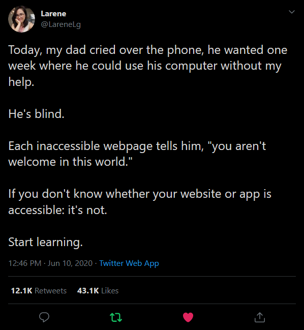
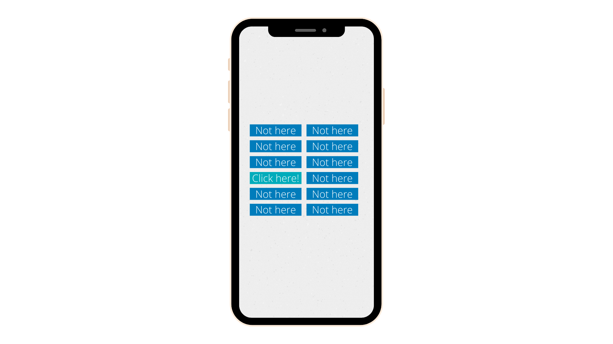
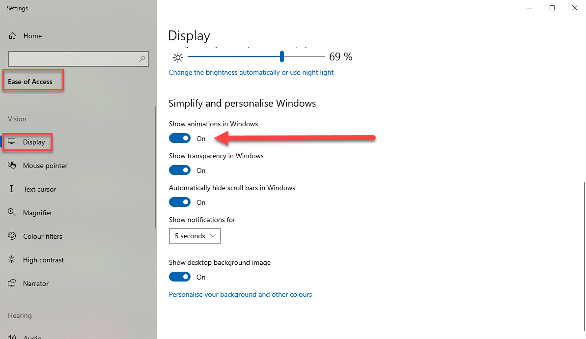

How to Build an Inaccessible App
How to Build an Inaccessible App
- Clicker has been tested
- I live in Perth, Australia, which means that I have to travel for at least 20 hours to get
anywhere
- And this time was no different, it took me almost
- a whole minute to get here, due to a dog in the middle of the hallway
- I'm a bit disappointed that I don't get to be in Oslo this year
- I mean I can deal with the fact that the timezones aren't great
- I mean last year I was up until 3am most nights anyway
- I mean what is with this sky? I took this at 10pm!
- I'll be seeing a darker sky doing this workshop today than I saw my entire week in Oslo last year
- I'm a freelance front end developer, which means I spend most of my time at the beach and the rest
of it working from home in my pyjamas
- I'm also heavily involved in the Perth tech community, help run a user group for front end
developers, am on the committee for the DDD Perth conference, attend all the Perth tech meetups and
work as an evangelist for YOW conferences
- Last year I also became a Twilio champion and a Microsoft MVP
- I also have a beautiful grey and white border collie who sits next to me wherever I'm working from
home
- Although he's getting very confused about all my video calls, whenever I start a call and say
hello, he can tell I'm talking to someone so goes to the front door because he assumes there's
someone come to visit
How to Build an Inaccessible App
- But today I'm here to talk about accessibility
- And rather than do what every other accessibility talk does,
- Today I'm going to teach you how to make things less accessible
- I'm also going to talk about some of the aria attributes
- And deciphering warnings you get from testing tools or as part of your build pipeline
Why?
- But first I want to talk to you about why
- Why is this important?
- Who am I catering towards?
70% of the web is inaccessible
10% have colour blindness31% have low vision33% have cataracts
17% have blindness or visual impairment6% have deafness or hearing loss2.6% have a cognitive impairment5% have a mobility impairment
- And while these may seem like small numbers
- This translates into millions of people
- And People with vision impairments account for $6.9B billion in online spending each year
- It's not a small difference

- The other day I saw this tweet
- From Larene, an a11y expert from Brisbane, who is also a MVP and YOW Evangelist with me
- 10 years ago, her dad had no issues navigating the internet by himself
- But now, he needs more help each week as everyone updates to the latest new framework, makes their website a SPA and adds popups and clutter
- These options can all be accessible, but we need to take extra steps to do this
- If not, we're just making our websites unuseable to an increasing percentage of the population
Sunlight and glareNight Mode Big fingers and small screensInjury or IllnessMulti-tasking
- This also doesn't just affect people with a permanent impairment either
- This affects all of us
- Ever tried to use your phone outside or where there's glare?
- Do you use night mode on your phone or computer?
- Android phones now take that one step further and can turn a phone screen to greyscale in the evening
- Do you have big fingers and have trouble with the small touch area on touch screens?
- Do you have an injury or illness that affects your sight, hearing or mobility?
- Last year I got an eye infection that severely impacted the vision in one eye for a period of time
- Maybe you temporarily lost part of your hearing?
- Maybe you lost use of one of your arms?
- Are you trying to do more than one thing at a time?
- Maybe you're trying to work while holding a small child
- Lots of us have had to try and work under less than ideal scenarios lately, how many times have you had to work one handed because the other one is entertaining one of your kids?
Vision Impairment
- Throughout the presentation I'll also touch on which impairments each approach can help
- And for which users you're making a better experience for
https://cdpn.io/yLYgLGY
button
Keyboard Accessible
Clickable
Tabbable
Focusable
div
Keyboard Accessible
Clickable
Tabbable
Focusable
Vision Impairment ✅
- Users with a vision impairment will often use their keyboard for navigation
- Users with a mobility impairment may also use their keyboard
- If they don't have the motor skills and control to navigate with a mousee
https://cdpn.io/jObyEqq
document.querySelectorAll("form input").forEach((i) => {
i.addEventListener("input", (e) => {
console.log(e.target.value);
if (e.target.value && e.target.value !== "") {
e.target.previousElementSibling.classList.add("active");
}
});
});
form label {
pointer-events: none;
position: relative;
top: 30px;
left: 10px;
&.active {
top: -5px;
transition: all 0.01s;
}
}
Vision Impairment ✅
- Those using screen readers can identify form fields if they have labels
- But labels also benefit those with mobility impairments particularly with fields like checkboxes and radio buttons
- If you have a label for a checkbox, and link the label to the input
- That increases the touch area
https://cdpn.io/JjYEEVr
a span {
position: absolute;
right: -200vw;
}
Vision Impairment ✅
https://cdpn.io/ExVZWyw
- Hover effects are used to indicate that an element can be clicked
- And usually involve changing a colour
- ANd we can see here, the colour is changing on hover, which means this must be clickable
- But what if the user has a vision deficiency, and is unable to differentiate between colours as
well
- Can you see the difference between the colours?
- Using something other than a colour change
- Like changing a background, border or the underline
- No longer relies on differentiating between colours
- So users can more easily tell the difference
- Although I'd only recommend using the border as an option if the element has a bit of space around
it
https://cdpn.io/abvJOqM
0 : Can be navigated to via keyboard
-1 : Cannot be navigated to via keyboard
1 : Will be navigated to in order
Vision Impairment ✅
- Dyslexics sometimes use screen readers to navigate the page
- They find it easier to focus
- Hijacking the tab order makes it more confusing if people can actually see the page
Click/Touch Areas
- We've all been there, we've all done it

- tried to press something and inevitably pressed something else
- Most of the time it's fine, sometimes we need to repeat an action
- But sometimes we might accidentally click on a link to something we *definitely* do not want
- Maybe we're at work, and it looks like we're doing something dodgy
- Now imagine you have a motor impairment, and you don't have as much control over your hands?
- How hard would it be to make sure you're clicking on the right thing?
a {
padding: 10px 15px;
margin: 10px;
}
- Thankfully this is an easy one to fix
- Increasing the touch area increases the target size and makes it easier
- Increasing space between elements also means you're less likely to hit the wrong thing
- It also makes it more noticeable, and easier for people to recognise individual elements, or pick out a certain one
Motor Impairment ✅
Animations
- We all know about animations, we use them to enhance our websites
⚠ Animation warning ⚠
- If you have epilepsy or are triggered by flashing lights, please look away for this slide
- I mean who doesn't love looking at this on a website
- What could possibly be wrong with this?
- Thankfully, there is another easy fix

- There is a setting to disable settings on your computer
- On Windows it's under **Ease of Access**, then Display
@media (prefers-reduced-motion) {
.animated-element {
animation: none;
}
}
- There's then a media query for the `prefers-reduced motion` setting
- If people have elected to turn that on, you can disable animations in your CSS
⚠ Animation warning ⚠
- If you have epilepsy or are triggered by flashing lights, please look away for this slide
Cognitive Impairment ✅
- This is super important for people with cognitive impairments like epilepsy or migraines
- But it also benefits those who have difficulty concentrating
- ANd sometimes people may just choose to turn this setting on because they prefer it (I know I got a little queasy looking at this demo so much while I was making it)
- It's important to respect the choices of our users, if we don't we will lose them
Captions and Transcripts
- This is another big one for a11y
- Adding captions to our content benefits everyone
Vision Impairment ✅
- Captions help people can't hear your video or audio
- Transcripts also help, and can be read by screen readers for those with a vision impairment
- And both are used by those with cognitive impairments as they may find it easier to concentrate on the text
- Transcripts also make your content more searchable, people can find phrases or information within the text without needing to listen to or watch the original media
Doing this properlyexpensive
- And yes, often we say, but it's so expensive and the automated alternatives aren't as good
A 70% accurate alternativebetter than nothing
- Yes but it's better than nothing.
- Automated YouTube captions are better than no captions
- And they can also give you a starting point, so you just need to go through and tweak them later
aria attributes
- Aria is often grabbed for when you know something has to be accessible
- But most of the time they're not necessary
- Earlier this year I was working on a project that needed to be accessible
- Developer ran a testing tool, which told him to add
Button, Checkbox, Link, Radio, Searchbox, Slider, Scrollbar, Tab, Textbox, Menu, Article, Heading,
Img, List, Row, Tablet, Banner, Complementary, Form, Main, Navigation, Alert, Status...
https://developer.mozilla.org/en-US/docs/Web/Accessibility/ARIA/ARIA_Techniques
Many of these widgets were later incorporated into HTML5, and developers should prefer using
the correct semantic HTML element over using ARIA, if such an element exists
https://developer.mozilla.org/en-US/docs/Web/Accessibility/ARIA
htmlreference.io
Vision Impairment ✅
- Semantic HTML benefits anyone who uses a screen reader or assistive technology
- These elements provide context about the kind of information in them, which can be conveyed to the user
- Context which we would normally infer through vision, eg. dot points suggest that there's a list
- Using the correct html elements for a list means the screen reader can tell the user that there's a list
- Developer added "presentation" as the role
- This element's role is "presentation" but contains child elements with semantic meaning.
- All that was needed to do was add an empty alt tag
- To show that the image was presentational
- Label defines a string that labels the current element
- Used to describe where there isn't text to describe it
- Similar to the icons
- Alternative could have been to add `aria-label`s to the links
- however as a HTML attribute
- It doesn't get translated in the browser
Testing
- While there are several automated tests
- And tools that you can use
- To properly test for a11y, need to run user testing
- With people who use this every day
- Difference between us opening a screen reader to run a test
- And someone who uses it every day
https://pa11y.org
Web Content Accessibility GuidelinesWCAG
- Tests against the web content accessibility Guidelines
https://www.w3.org/WAI/standards-guidelines/wcag
https://github.com/dequelabs/axe-core
https://whocanuse.com
https://abc.useallfive.com
https://github.com/hail2u/color-blindness-emulation
.element {
filter: url('filters.svg#protanopia');
filter: url('filters.svg#protanomaly');
filter: url('filters.svg#deuteranopia');
filter: url('filters.svg#deuteranomaly');
filter: url('filters.svg#tritanopia');
filter: url('filters.svg#tritanomaly');
filter: url('filters.svg#achromatopsia');
filter: url('filters.svg#achromatomaly');
}
- Include the SVG file in your project
- Apply the relevant filter when you need to
https://24ways.org/2019/twelve-days-of-front-end-testing/
https://www.javascriptjanuary.com/blog/getting-started-with-front-end-testing
https://youtu.be/-__TNwVR110
https://inclusive-components.design
https://codepen.io/collection/AypYaP
twitter.com/amys_kapers
amyskapers.dev
blog.amyskapers.dev
speaking.amyskapers.dev
github.com/amykapernick
twitch.tv/amyskapers